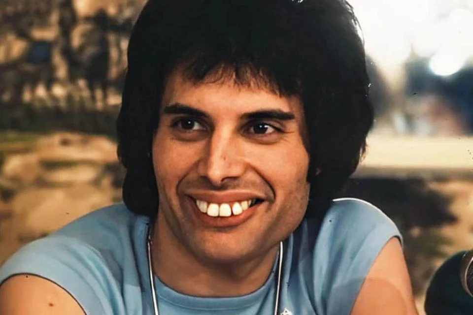
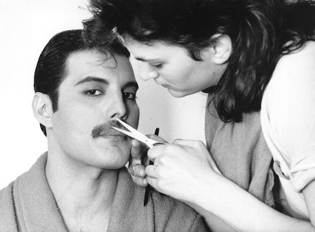

Carreira de Freddie Mercury
Início da carreira
Freddie Mercury começou sua carreira na música em 1969, quando fundou a banda Smile juntamente com Brian May e Roger Taylor. A banda mais tarde evoluiu para o Queen, com a adição de John Deacon ao grupo.
Sucesso com o Queen
Com o Queen, Freddie Mercury se tornou um dos maiores ícones da música mundial. A banda lançou sucessos como "Bohemian Rhapsody", "We Will Rock You" e "We Are The Champions".
Carreira Solo
Além do Queen, Freddie Mercury também teve uma carreira solo de sucesso. Em 1985, ele lançou o álbum "Mr. Bad Guy", que incluía músicas como "Living On My Own" e "Love Me Like There's No Tomorrow".

Em 1988, Freddie lançou outro álbum solo intitulado "Barcelona", em colaboração com a soprano espanhola Montserrat Caballé. O álbum inclui a canção título "Barcelona", que se tornou um hino popular na cidade espanhola.

Freddie continuou a lançar música solo até sua morte em 1991, incluindo seu último álbum "Innuendo" em 1991.
Curiosidades
- Freddie Mercury nasceu como Farrokh Bulsara em Zanzibar, na costa leste da África.
- Antes de ingressar no Queen, Freddie trabalhou como designer gráfico e até mesmo criou o logotipo original do Queen.
- Freddie foi postumamente diagnosticado com HIV em 1991, um dia depois de sua morte.